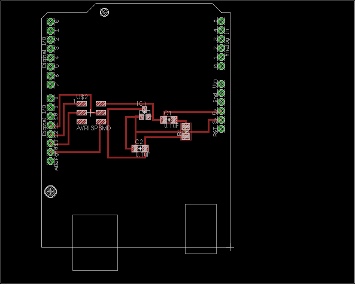

Kousuke Kikuchi
Fab Academy Participant and PhD Candidate
Week Final: Final Project Presentations
Summary: Plant Pod ß
all files regarding this project can be found from link below.
3D Design, Own Arduino Project, LCD and I2C Shield and Sensor Shield.
1. Objectives
1. Knowing the proper environment for plant
2. Utilizing for child education on botany
3. Posting to Cloud Funding service
"Plant pod" is designed for inducing communication between plant and human by displaying sensored data.c By showing the confort for plant, we can notice the good environment for a particualr plant. Also, this product can be used for child education. I also push this product to WeMake.jp which is a venture company to actualize the idea.
2. Advantages to other products
2.1 Idea of displaying proper environment for plant
The idea to sense the environment can be new, and useful for gardener. In addition, most plants exhibited at office will wither within few years. By knowing the proper environment, the plant will not wither with relatively low cost when compared to buying another one.
2.2 Completely Hackable with Arduino
One of the great feature of this product is hackable. You can update new sketch via Arduino IDE.
2.3 Different variety of product
If you have Arduino, you do not have to make Arduino compatible product, just making Sensor Shield and LCD I2C Shield. If we do not have Arduino, complete products can be designed much smaller than Plant Pod (ß)
3. Methodology
3.1 Electronics Design
3.1.1 Designing own Arduino, ArKo
I designed Arko by following the following examples, FabKit, Barduino, and Archiduino design by Atsushi Enta. The difference between the other is that this board has 2 layers, top and bottom to add 3.3V regulator and AVR ISP pin headers. Also, this Arko is completely same pin configuration with Arduino hardware except 2 additional analog input pins.


However, the project is on progress the error at milling.
(2013.07.19)
After milling these board with the speed as 1 [mm/s] of Modela, I obtained surface and bottom boards. And I soldered together the all stuffes regarding this board.
However, at programming on the board, short circuit has been occurred at connecting USB and AVR ISP mkII.
After thinking about this problem, I found that AVR ISP's pin configurations were different from original pin configurations. The bottom board, I reversed the png format file of the bottom board, before milling it. Hence, the pin configurations of AVRISP were reversed culminating in short circuit.
| MISO | VCC |
| SCK | MOSI |
| RST | GND |
The chart below was the illustration of AVRISP pin configurations. On the other hand, since I reversed the pin configuration, it became:
| VCC | MISO |
| MOSI | SCK |
| GND | RST |
The AVRISP was connected to reversed, VCC to GND, GND to VCC, so this the result of short circuit.
3.1.2 Checking Sensors with Arduino and a breadboard
I checked all the sensors used in the sensors at a breadboard. List of the components are:
MG811, CO2 Sensor:
DHT22, Temperature and Humidity Sensor
Grove, Moisture Sensor:
MPL115A2, Air Pressure Sensor:
Piezo Sensor (to detect wind speed)
TEMT8000, Photosensor:
LMB0820, LCD Unit:
NXFT15XH103FA2B, Thermistor:
I confirmed the usage of sensors except actual usage of MG811. MG811 fluctuates between 200mV to 370mV, so operational ampfier or analog reference should be used for detecting actual CO2 ppm.
3.1.3 Checking LCD with Arduino by using Jumper Pins
But jumper pins were quite complicated at checking the LCD, so I decided to make a shild for it.
But I found later, 8x2 characters were quite little for display. So, I buy other LCD Unit.
3.1.4 Checking I2C with Arduino
I2C was quite easy. All we have to do is connecting SCL and SCK, and determine slave and master. Slave board has a 4bit address and master board transmits the data with the address.
3.1.5 Designing Sensor Node

I tried to use MPL115A2 air pressure sensor, but it was quite hard to solder. So, I had to use a breadboard-pin configurated MPL115A2.
3.1.6 Designing Actuation Node
At this point, I failed to design this shield due to different pin configuration of I2C module. I should double-check my schematics between sensor node and this module.
3.2 Milling
3.2.1 Arko, Arduino Compatible Board, failed
I have tried several times, but milling the boards are quite difficult because milling will make the surface of the board quite rough. It will engender short circuit to the other layer. The solutions to this problem are speed of milling and endmill, but both are not recommended. First solution to this problem is that decreasing the speed of mill from 4 [mm/s] to 0.5-1 [mm/s]. Of course, it will spend 4 to 8 times more than the nomal milling. Second solution is using a 0.008" endmill with 1 [mm/s]. However, this endmill is quite fragile so that I ruined one endmill in 2 trials.

3.2.2 Sensor Shield
I tried 3 times for this shield. First board was milled with 4[mm/s] endmill speed, culminating short circuit between GND and VCC. I should check the connectivity at that time, but I forgot it. I had to spend 6 hours to check the electronic conectivity. Second one was tored down due to different layer of pad for soldering. Last one was succeeded with full effort.
3.2.3 LCD and I2C Shield
I tried a number of times, maybe 7 times. Pin configuration, breakdown of cupper, rough surface. Because some pins were electrinically separated from cupper layer, I had to check the all pins were connected perfectly, consuming numerous time.
The problem on this board is that pins for LCD and I2C were extremely fragile. Since this board does not have double layer of cupper, I had to solder them on top cupper layer.
4. Embed Programming
4.1 Sensor Node Only
At the Embed Programming, all I must do is assembly the each programs of sensors. So, it was not so difficult. I programmed the board which can return csv format data.
4.2 Actuation Node Only
For actuation node, I used sample program that can work well.
4.3 Transmission sensored data with I2C
This time, I faced difficulties regarding serial communication and char format data. The sample program can transmit the data to the slave board. However, since Wire library does not convert float or integer to string or char class, I had to alter them. Also, Since I2C is a communication module, other modules such as Serial Communication is not able to be accepted. Hence LCD or LED can be a powerful tool for debugging. Char data processing was other difficulties for me. I2C was so I had to implement csv separator by myself. Such as
void receiveEvent(int howMany){
String strAry[6];
int flag = 0;
// air pressure, lux, soil temperature, soil moisture, air temperature, air humidity,
while(1 < Wire.available()){
char c = Wire.read(); // receive byte as a character
Serial.print(c); // print the character
if(c != ','){
strAry[flag] += c;
}else{
//Serial.println(strAry[flag]);
flag += 1;
}
}
The other problem is how to convert string to float. I assembled a function which can convert it.
float StrToFloat(String str){
char carray[str.length() + 1]; //determine size of the array
str.toCharArray(carray, sizeof(carray)); //put str into an array
return atof(carray);
}
4.4 Ascii Art Face
Here in Japan, Ascii Art face (so called as Kaomoji) is frequently used. However, most characters for ascii art, muiti-byte character are utilized. Hence I had to select the face and its corresponding environment. The faces I designed here are:
(>_<)... (this face looks like sad face
(-w-)zzz (this face looks like sleepy
{{{{(*+w+*)}}}} ( this face quivers due to cold
(~Q~;;;) ( this face becomes sluguish under hot weather.
q(>w<)p\\ ( this face feels sick due to high humid
(-_-`) ( this face looks like sad...
o(*^w^*)o ( this face becomes overwrought.
4.5 Whole Programs
For sensor node:
// add air pressure
// add DHT22
#include <Wire.h>
#include <DHT22.h>
#include <stdio.h>
// definitons of constants
# define DHT22_PIN 7 // DHT22
const int address = 0x60; // Pressure
const float B = 3380; // thermistor
const float Rr = 10.0;
const float Rt = 10.0;
const float Tk = 298.15;
// definitoin of global parameters
float lux0 = 0; // for temt8000
float temp = 0.0; // DHT22
float humid = 0.0; // DHT22
int moist = 0; // for moisture sensor
float pressure = 0.0; //for air pressure
float soil_temp = 0.0; // for thermistor
int times = 0;
// definitions of global parameters for i2C
char lux[16];
char air_temperature[16];
char air_humid[16];
char soil_moisture[16];
char air_pressure[16];
char soil_temperature[16];
char time_str[16];
// setup a DHT22
DHT22 myDHT22(DHT22_PIN);
int flat;
float read_coefficients(int total_bits, int fractional_bits, int zero_pad) {
unsigned char msb, lsb;
msb = Wire.read();
lsb = Wire.read();
return ((float) ((msb << 8) + lsb) / ((long)1 << 16 - total_bits + fractional_bits + zero_pad));
}
unsigned int read_adc() {
unsigned char msb, lsb;
msb = Wire.read();
lsb = Wire.read();
return (((unsigned int)msb << 8) + lsb) >> 6;
}
float a0, b1, b2, c12, c11, c22;
void setup () {
Wire.begin();
Serial.begin(9600);
Wire.beginTransmission(address);
Wire.write(0x04); // Read coefficient data
Wire.endTransmission();
Wire.requestFrom(address, 12); // Request 12 bytes
if (Wire.available()) {
a0 = read_coefficients(16, 3, 0);
b1 = read_coefficients(16, 13, 0);
b2 = read_coefficients(16, 14, 0);
c12 = read_coefficients(14, 13, 9);
c11 = read_coefficients(11, 10, 11);
c22 = read_coefficients(11, 10, 15);
}
}
void loop () {
times += 1;
Serial.println("start");
int flag = 0;
Wire.beginTransmission(address);
Wire.write(0x12); // Start both conversions(Pressure and Temperature)
Wire.write(0x01);
Wire.endTransmission();
delay(5);
Wire.beginTransmission(address);
Wire.write((uint8_t)0x00); // Read pressure and temperature
Wire.endTransmission();
Wire.requestFrom(address, 4); // Request 4 bytes
if(Wire.available()) {
unsigned int Padc = read_adc();
unsigned int Tadc = read_adc();
float Pcomp = a0 + (b1 + c11 * Padc + c12 * Tadc) * Padc + (b2 + c22 * Tadc) * Tadc;
float Pha = Pcomp * 650 / 1023 + 500;
// print out of air pressure
Serial.print("air pressure=");
Serial.println(Pha);
// convert float to string
//dtostrf(temp, 4, 2, tempC);
dtostrf(Pha, 4,1,air_pressure);
flag += 1;
}
//add temt8000 with analog 1 pin
int in = analogRead(1);
float ar0 = (in * 5.0/1024)/10.0;
lux0 = (20/0.01) * ar0;
Serial.print("LUX=");
Serial.println(lux0);
//convert float to string
dtostrf(lux0, 4,1,lux);
flag += 1;
// add thermistor to detect the temperature on soil
int temp_soil_val = analogRead(2);
float rr1 = Rr * temp_soil_val / (1024.0 - temp_soil_val);
float t = 1/(log(rr1/Rt)/B + (1/Tk));
soil_temp = t - 273.15;
//Serial.print("soil temperature=");
//Serial.println(soil_temp);
//convert from 25 degree
float temp = 25.0 - soil_temp;
float temperature = 25.0 + temp;
Serial.print("soil temperature=");
Serial.println(temperature);
//convert float to string
dtostrf(temperature, 3, 1, soil_temperature);
flag += 1;
// moisture sensor to detect the humidity on soil at analog pin 3
int moisture = analogRead(3);
Serial.print("soil moisture=");
Serial.println(moisture);
// convert integer to string
//sprintf(StrBuf, "%03d", i);
sprintf(soil_moisture, "%d", moisture);
flag += 1;
// see temperature and humidity from DHT22 digital 7
// this sensor should be read last.
DHT22_ERROR_t errorCode;
//Serial.println("Requesting data...");
errorCode = myDHT22.readData();
switch(errorCode){
case DHT_ERROR_NONE:
temp = myDHT22.getTemperatureC();
Serial.print(myDHT22.getTemperatureC());
Serial.print("C ");
humid = myDHT22.getHumidity();
Serial.print(myDHT22.getHumidity());
Serial.println("%");
// convert float to string
dtostrf(temp, 3, 1, air_temperature);
dtostrf(humid, 3, 1, air_humid);
flag += 1;
break;
case DHT_ERROR_CHECKSUM:
Serial.println("check sum error");
break;
case DHT_BUS_HUNG:
Serial.println("BUS Hung ");
break;
case DHT_ERROR_NOT_PRESENT:
Serial.println("Not Present ");
break;
case DHT_ERROR_ACK_TOO_LONG:
Serial.println("ACK time out ");
break;
case DHT_ERROR_SYNC_TIMEOUT:
Serial.println("Sync Timeout ");
break;
case DHT_ERROR_DATA_TIMEOUT:
Serial.println("Data Timeout ");
break;
case DHT_ERROR_TOOQUICK:
Serial.println("Polled to quick ");
break;
} // end of case
Serial.println("submitting sensored data to the actuator");
Wire.beginTransmission(4);
//Wire.write("Hello, Transmitter::");
Wire.write(air_pressure);
Wire.write(",");
Wire.write(lux);
Wire.write(",");
Wire.write(soil_temperature);
Wire.write(",");
Wire.write(soil_moisture);
Wire.write(",");
Wire.write(air_temperature);
Wire.write(",");
Wire.write(air_humid);
Wire.write(",");
//sprintf(soil_moisture, "%d", moisture);
sprintf(time_str, "%d", times);
Wire.write(time_str);
Wire.write("\n");
int byte = Wire.endTransmission();
Serial.println(byte);
Serial.print(times);
Serial.println(" times transmitted.");
//delay(5000); // for developping
delay(10000); // for execution
//must check the i2c wire is surely connected to the other board!
}
For Face
#include <Wire.h>
#include <LiquidCrystal.h>
#include <stdio.h>
#include <stdlib.h>
//definition of LC
LiquidCrystal lcd(12, 11, 10, 5, 4, 3, 2);
// definitoin of global parameters
float lux0 = 0; // for temt8000
float temp = 0.0; // DHT22
float humid = 0.0; // DHT22
int moist = 0; // for moisture sensor
float pressure = 0.0; //for air pressure
float soil_temp = 0.0; // for thermistor
int times = 0;
// function
float StrToFloat(String str){
char carray[str.length() + 1]; //determine size of the array
str.toCharArray(carray, sizeof(carray)); //put str into an array
return atof(carray);
}
void setup()
{
Wire.begin(4); // join i2c bus with address #4
Wire.onReceive(receiveEvent); // register event
Serial.begin(9600); // start serial for output
// definition of lcd
lcd.begin(20,4);
lcd.print("hello world of plant");
}
void loop()
{
delay(100);
}
// function that executes whenever data is received from master
// this function is registered as an event, see setup()
void receiveEvent(int howMany){
String strAry[6];
int flag = 0;
// air pressure, lux, soil temperature, soil moisture, air temperature, air humidity,
while(1 < Wire.available()){
char c = Wire.read(); // receive byte as a character
Serial.print(c); // print the character
if(c != ','){
strAry[flag] += c;
}else{
//Serial.println(strAry[flag]);
flag += 1;
}
}
// convert string to float
//float StrToFloat(String str)
float air_pressure = StrToFloat(strAry[0]);
float lux = StrToFloat(strAry[1]);
float soil_temperature = StrToFloat(strAry[2]);
float soil_moisture = StrToFloat(strAry[3]);
float air_temperature = StrToFloat(strAry[4]);
float air_humidity = StrToFloat(strAry[5]);
// test of parameters
lcd.clear();
lcd.setCursor(0,2);
lcd.print("blightness::");
lcd.print(lux);
// end submission
int x = Wire.read(); // receive byte as an integer
Serial.println(x); // print the integer
if(soil_moisture < 30){
// sleep mode lux < 200
// need water
lcd.clear();
lcd.setCursor(0,0);
lcd.print(" (>_<)...");
lcd.setCursor(0,1);
lcd.print("I need water!!!");
}else if(lux < 140){ // this setting is for vertical location.
// need water
lcd.clear();
lcd.setCursor(0,0);
lcd.print(" (-w-)zzz");
lcd.setCursor(0,1);
lcd.print("I'm sleeping.");
}else if(air_temperature < 15){ // test ::30
// cold mode
lcd.clear();
lcd.setCursor(0,0);
lcd.print(" {{{{(*+w+*)}}}}");
lcd.setCursor(0,1);
lcd.print("I feel cold here...");
}else if(air_temperature > 35){ // test ::20
//hot mode
lcd.clear();
lcd.setCursor(0,0);
lcd.print(" (~Q~;;;)");
lcd.setCursor(0,1);
lcd.print("I feel hot here...");
}else if(air_humidity > 80){
// humid mode
lcd.clear();
lcd.setCursor(0,0);
lcd.print(" q(>w<)p\"\"");
lcd.setCursor(0,1);
lcd.print("The air is too humid");
}else if(air_humidity < 40){
// arid mode
lcd.clear();
lcd.setCursor(0,0);
lcd.print(" (-_-`)");
lcd.setCursor(0,1);
lcd.print("The air is arid.");
}else{
lcd.clear();
lcd.setCursor(0,0);
lcd.print(" o(*^w^*)o");
lcd.setCursor(0,1);
lcd.print("I like here!!");
}
lcd.setCursor(0,2);
lcd.print("Temperature:: ");
lcd.print(air_temperature);
lcd.setCursor(0,3);
lcd.print("Humidity:: ");
lcd.print(air_humidity);
}
6. Exterior Design
6.1 Composites
This product requires fresh air, because it detects humidity, temperature, air pressure. Also, lux is detected. So, air should permeate the skin, as well as the light. So, I tried 3 types of composites. one was made from 3D printed egg, the others were simple balloons. I prepared natural string and lethin, and winded to the objects.
As a result, the shape itself might be good, but I found it was not able to embed the sensor node.
6.2 3D Printing
I tried 2 times. But both outputs were not satisfied.
Output result at my University.

Both of them were failed. So, I reused my university's output.
6.3 Laser Cutter
I made a box which has holes. Into the holes hooks catch the pod, bolstering the dead weight. Also, I make a hole for LCD.
the pins should be short
upside down...
failures...
And project will be working on... to raise it to the cloud funding platform.
Summary of Failures
LCD and I2C Shield: 7
1. Designing and making LCD and I2C Shield were failed due to different pin configuration between LCD and I2C pin
2. tore down the cupper surface number of times. Also, some endmills were irritated, culminating short circuit.
3. Low profile pin was not able to communicate to other board.
ArKo, Arduino-compatible ATMega328P-AU board: 6
Each times, green light of AVRISP mkii blinks, but I was not able to burn bootloader to ATMega328P.
1. RST, MOSI, MISO, SCK might not be
2. Only one time, my computer was able to recognize ATMega328P from avrdude. However, after the upload of bootloader, it did not work at all.
3. Design role. I usually design with 10mil, however to wire the center of each pins, I altered it to 5mil. Since
4. The speed of mill. default setting of fab modules recommends to use 4 [mm/s]. But this speed will result in rough surface of board, short circuit. Instead, I set up 0.5 - 1 [mm/s].
5. I also tried 0.008'' endmill found in my Lab. But I found 1/64" endmill was useful because 0.008" mill was extremely fragile. It will tolerate once or twice. After the schema
Sensor Node Shield: 1
Air pressure sensor, MPL115A1, was not able to solder properly. As I found in datasheet, 6V to heat up the sensor was needed. Also, the sensored range was quite narrow. This time I quitted using this sensor. But, I will try next time.
Piezo Sensor: 1
Wind for ventilation is a one of most important environmental factors for plant. However, wind turbine was relatively larger than most plant.
I tried to use piezo vibration sensor for low cost wind sensor for ventilation. After the soldering, I experimented wind speed and sensored data. However, even the strong wind which the plants do not prefer, piezo sensor was not able to detect wind.
At programming
1. I2C and Serial Communication must not be used at the same time. Instead of Serial Communication, LCD might be a powerful tool.
2. I2C requires String or Char. So, we must convert float or integer into them.
3. I2C data was sent with one char. So, we must devide "," at csv format data.
Exterior Design
1. 3D Printing was failed in both university, consuming time.
2. I tried 3 times of laser cutter.
3. Composites without particular objective can not generate proper shape.
Assembly
Sometimes, sensor node is not able to respond due to short circuit.
Modela Endmills I broke: 8